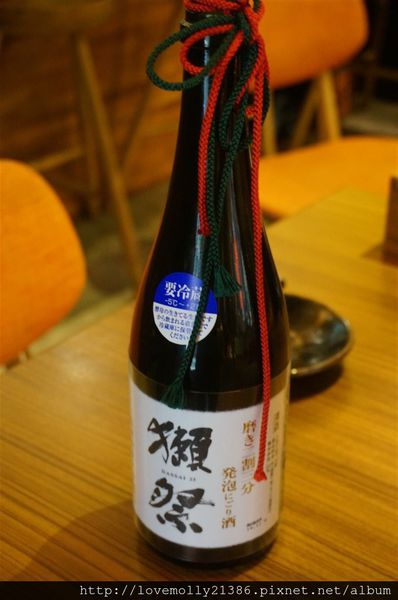
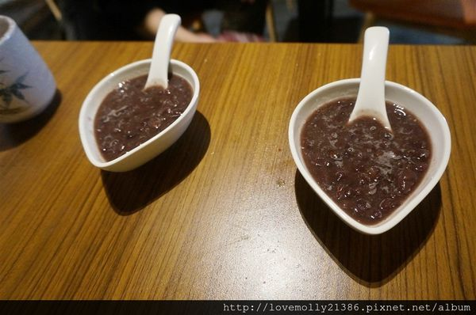

大家好!今天要介紹的是日式料理喔!!!!!!!!!!!!!!!!!
阿芷好像是第一次寫日式料理呢
今天要來分享的這一家店當天吃的時候拍照上傳就有很多人問我在哪裡了XD
真的要列為私藏的好店啊
今天要跟大家分享的就是位於桃園的一畝田手作日式料理
阿芷忍不住拍了很多張照片 大家的口水要接好啊(誤)

在一處大樓的一樓 店面不算大但是還挺顯眼的呢!
在2015年換了經營者 所以現在是新老闆新氣象喔
從店門口就可以感覺到濃濃的日本味
而且我發現一畝田很喜歡利用日本酒瓶來裝飾 不但省錢也很有味道
另外 一畝田在店門口的斜對面還有提供專屬的停車場喔!
這樣就不怕找不到停車位了
一樓店面 真的很多酒瓶吧XD
阿芷對日本酒不是很了解 不過日本酒都好大瓶而且瓶子也都好漂亮啊
而且名字也都好有趣 天狗舞、國士無雙等等的 好像背後都有一段故事一樣
主廚看我跟奶茶哥研究了很久 拿出了他們鎮店之寶給我們飽飽眼福

就是這瓶獺祭!
聽說一瓶可是要價五位數阿
今天真是開了眼界了阿ya
這棵櫻花樹可是店裡的鎮店之寶阿
雖然花是假的 但是櫻花木是真的XD
這棵櫻花樹也讓店裡大大的增加了日本風情阿
來日本料理店最喜歡看主廚料理了 尤其是切生魚片跟擺盤時
覺得根本超級帥的阿(愛心眼)
廚房看起來也很乾淨 麻雀雖小 一應俱全!
這裡還有二樓呢! 上去瞧瞧吧

二樓就像個小包廂一樣 有一張大大的木頭桌子
很適合多人聚會阿
還有電視可以看 完全不用怕無聊的阿XDD
旁邊也是擺滿了酒瓶(是不是來這裡不喝酒不行啊hahaha)
喝酒不開車 開車不喝酒
來看看菜單吧!這裡的價位跟其他日式料理店比起來真的是佛心來著了
菜單走黑X黃路線 簡單又有質感
第一頁就讓我很喜歡
師傅做握壽司的時候的手勢好專業喔
來看看價位
價位是不是非常親民阿
當然也有每日限定的菜色啦!
這裡還有無菜單料理啊!!!!!讓主廚為你準備一道道的驚喜
阿芷這一天也是一切都讓主廚做主 果然沒讓我失望!
好了 來看看阿芷我點了那些餐點
鮪魚花手卷
這是我們吃的第一道菜
一開始我們有些怕怕的 因為我們不知道這裡的魚到底新鮮不新鮮阿
別看這個鮪魚花手卷外表看起來非常不起眼阿!
裡面的鮪魚真的是好新鮮阿~~~~~~~~
完全沒有腥味 連阿芷我這個超少吃生魚片的人都覺得十分美味阿
後來老闆有來跟我們聊天我們才知道原來老闆家是在基隆捕魚的
魚大部分都是自己家捕的再送過來 非常新鮮
特選刺身盛合
這樣一道菜只要350 我真的覺得好划算阿
裡面有紅甘、鮭魚、鮪魚、魚卵、炙燒干貝跟櫻花蝦
前面還有一串像丸子一樣的東西 那是真正的山葵喔!
師傅擺盤擺的這麼漂亮
當然要先拍上一張 上傳IG
主廚認真擺盤的樣子 我發現每一桌客人的菜都好漂亮啊
不過感覺人力有所不足 主廚好忙阿~~~~~
紅豆湯

最後一樣甜品是紅豆湯
滿滿的紅豆又大又甜 雖然肚子已經撐到不行了還是馬上就吃光光了XD
主廚說這可是不加半滴水的紅豆湯 難怪這麼香濃阿~~
今天每一道我都挺喜歡的 尤其是明太子飯糰跟蘆筍牛肉牡蠣
平價又美味的日式料理店 推薦給大家啦
::附上相關資訊::
一畝田手作日式料理
一畝田FB粉絲團
地址：桃園市中埔一街105號
電話：(03) 3026999 營業時間：11:00–00:00 打完收工!
引用文章:跟著阿芷一起跑、跳、碰!